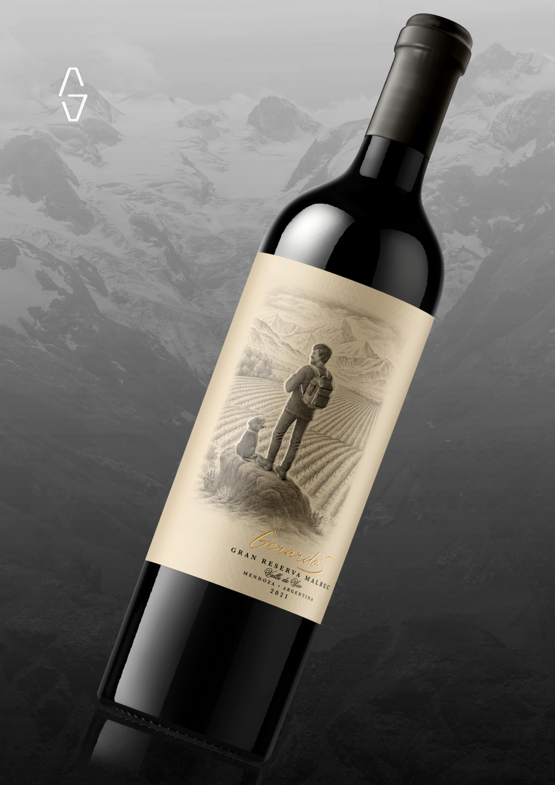
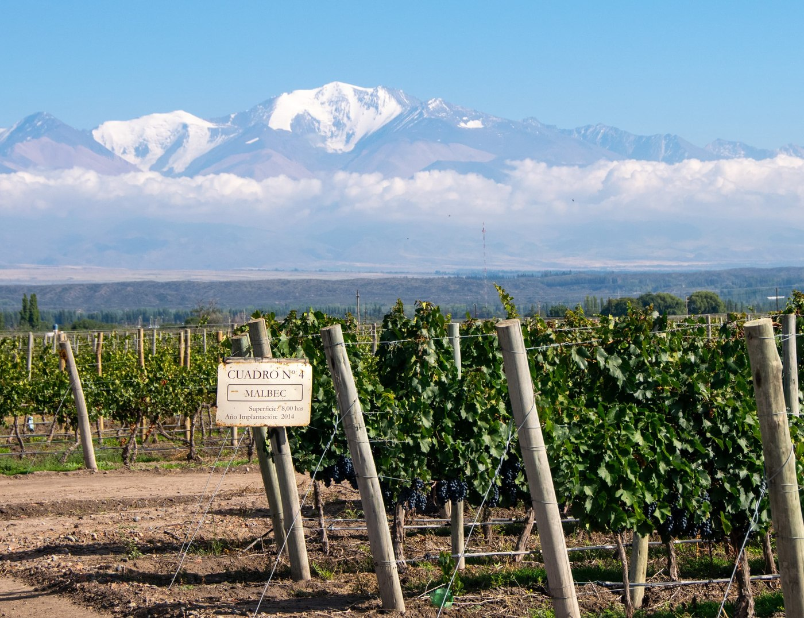
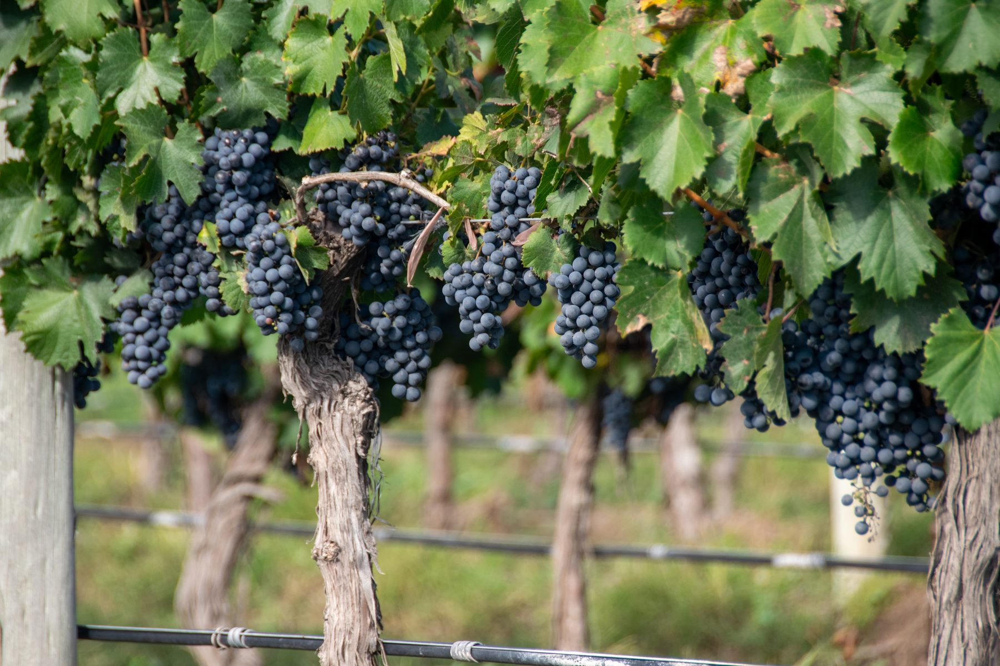
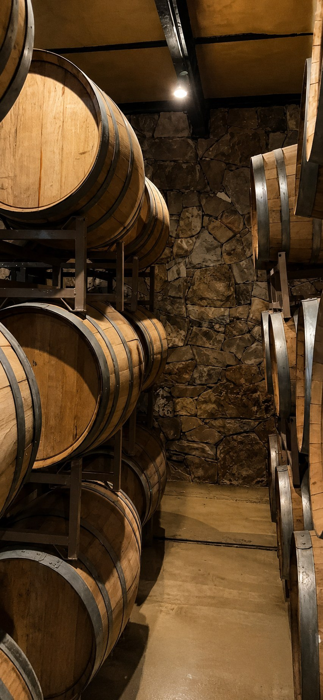

Vinos del Valle de Uco,
Wines from the Uco Valley, shaped at the foot of the Andes.
Al pie de la Cordillera de los Andes, la altura, el clima y los suelos definen el carácter del Valle de Uco.
At the foot of the Andes, altitude, climate, and soil define the character of the Uco Valley.
900–1,100 m s.n.m.m a.s.l.
Valle de Uco, Tupungato
Espaldero Tradicional
Traditional Trellis
Manual y Selectiva
Hand-harvested and selected.
Lotes Limitados
Limited Production
Maceración Fría Prolongada
Extended Cold Maceration
Levaduras Seleccionadas
Selected Yeasts
Fermentación Maloláctica
Full Malolactic Fermentation



Lotes limitados, cosecha manual y selectiva, y una crianza definida para cada vino.
Limited lots, grapes harvested and selected by hand, and an individual approach to aging.

Frutas Tropicales · Vainilla · Cítricos
Tropical Fruits · Vanilla · Citrus
Ver fichaView wine
Frutos Rojos · Especias · Vainilla
Red Fruits · Spice · Vanilla
Ver fichaView wine
Frutos Rojos · Chocolate · Hierbas
Red Fruits · Chocolate · Herbs
Ver fichaView wine
Frutos Negros · Ciruela · Especias
Dark Fruit · Plum · Spice
Ver fichaView wine
Frutos Negros · Ciruela · Especias
Dark Fruit · Plum · Spice
Ver fichaView wine
Chocolate · Frutos Negros · Moca
Chocolate · Dark Fruit · Mocha
Ver fichaView wine